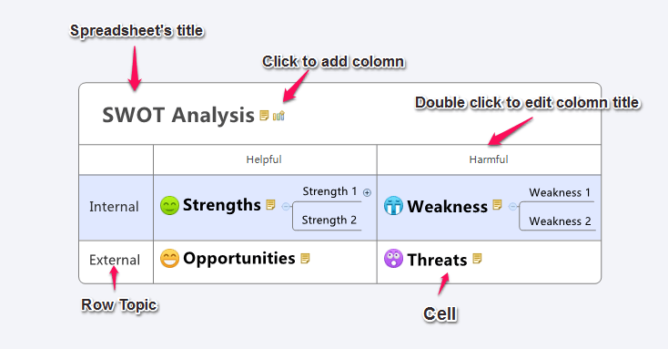

マトリックス
XMind allows users to easily insert information into a spreadsheet format, and at the same time include multiple topics - complete with individual appearances and structures - within each cell. The XMind Spreadsheet can display a set of complex factors and behaviors in perpendicular rows and columns, thus enabling in-depth comparative analysis for project management and strategic decision-making.

基本操作:
列と行:
行トピックは、マインド マップや他の構造から変換された、メイントピックです。
- 列の追加 :
- マトリックスのタイトルの横にあるボタンをクリックします。
- 行トピックを選択して、[Tab]キーを押します。
- 行の追加 :
- マトリックスのタイトルを選択し、[Enter]を押します。
- 行トピックを選択して、[Enter]キーを押します。
- 列または行のトピックを編集します :
- Column name: You can double click to edit Column text, and change order by selecting the column with mouse and moving left/right directly.
- Row topic: You can double-click to edit it, and change the order by selecting the row topic with mouse and moving up/down directly.
- To Delete a column or row:
- Column: Delete all cell topics under in this column.
- Row: click on the row topic and press "Delete" on the keyboard or right-click and select "Delete".
Cell topic:
Cell topics have the same operations as topics in a mind map and other structures.
- To add a cell topic within the same level:
- Click "Enter" key after selecting a topic in this cell.
- Double click the blank in cell.
- Changing a cell topic structure:
- Select the cell topic.
- Open properties view.
- Select structure in the drop-down structure list.
注:
- Cell topics can be dragged and moved from one cell to another.
- You can add subtopic to any cell topic by clicking tab.
- You can add relationship, boundary in Spreadsheet format.